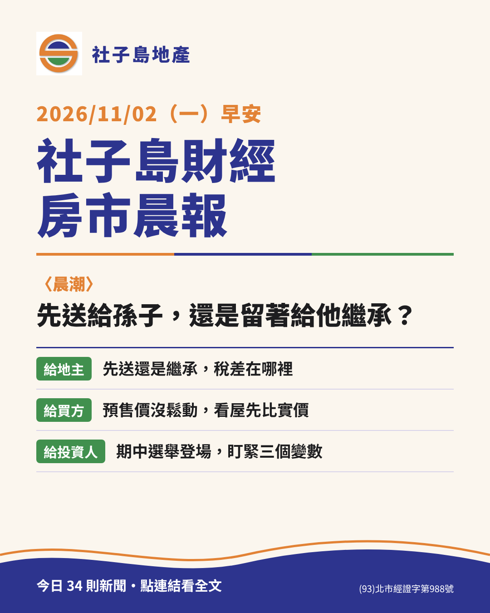

2026/11/02 (一) 早安
社子島財經房市晨報｜先送給孫子，還是留著給他繼承？
今日 34 則財經與房市新聞，依主題分成 9 類，社子島、主商圈與台北市的新聞排在最前面。點標題就能開啟原文。
〈潮汐表〉今天的三道潮水
- 給地主想把地留給子孫，先送還是等繼承，差在土地增值稅和遺產稅怎麼算；9月新制上路，過世前兩年內送出的財產，受贈的人也要按比例分擔遺產稅。
- 給買方10月交易量回升，但北北桃預售最低單價都比去年高；社子島所在的士林區，預售漲幅居全台第一，看屋前先比實價。
- 給投資人美股期指週日回升，美國期中選舉週二登場；台股週一開盤前，先看法人點名的三個變數。
〈晨潮〉
先送給孫子，還是留著給他繼承？
昨天阿公在堤防上替老朋友問我們：「阿財講，伊欲趁這馬身體猶勇，先把地過戶予孫仔。先過戶較好，抑是留到以後予孫仔繼承較好？兩款的稅金，敢有差？」這是許多地主心裡放了很久的問題，今天週一，我們就從這裡聊起。
先送，要繳哪些稅？生前把土地送給子孫，叫做贈與。贈與的人，每年有244萬元的贈與稅免稅額，超過的部分才要繳贈與稅；但土地過戶的同時，受贈的孫子還要繳一筆土地增值稅，算的是這塊地從上次移轉到現在漲了多少。社子島不少土地是祖先留下來的，持有時間長，這一筆有時比贈與稅還重。
等繼承，又有什麼不同？依《土地稅法》第28條，因繼承而移轉的土地，不課土地增值稅；遺產稅的免稅額和扣除額也比贈與高。而且將來孫子要賣地時，增值稅是從繼承那年的公告現值起算，前面漲的那一大段，等於歸零重來。所以單看稅，留著繼承常常比較划算；但這不是說先送一定吃虧，若想早一點讓孫子用這塊地，或家裡已有共識，分年贈與也是一條路。
還有兩個新提醒。今年9月起的新制，過世前兩年內送出的財產，仍要算進遺產，受贈的人還要按比例分擔遺產稅；另外，房子和土地若分給不同的人，原本自住的地價稅優惠可能跟著沒了。怎麼選，沒有標準答案，要看土地現值、持有多久、家人怎麼想；實際稅額以國稅局與稅捐處核定為準，我們很樂意陪您先把帳算一遍。
先送 vs. 等繼承，稅怎麼看
- 先送（贈與）：贈與稅每年免稅額244萬元；過戶時受贈人另繳土地增值稅；過世前兩年內的贈與仍併入遺產。
- 等繼承：不課土地增值稅（《土地稅法》第28條）；將來出售時，增值稅自繼承時的公告現值起算。
- 共同提醒：房、地分給不同人，可能失去自用住宅地價稅優惠。實際稅額與適用條件，以國稅局及各地稅捐稽徵處核定為準。
市場這頭，美股期指週日回升，美國期中選舉週二登場，台股週一開盤前再看一眼就好。今天的新聞已經分好類，相關的贈與、遺產案例，都整理在「稅務與法律實務」裡，往下滑就能看到。
——社子島地產團隊
主商圈：社子島・北士科・關渡洲美平原4 則
社子島週末沒有新的開發進度；北士科帶動北投預售量連兩年居北市第一，社子島所在的士林區，預售漲幅居全台之冠
台北市1 則
北市年輕人買房的區域正在移動
市地重劃・區段徵收1 則
週末沒有新的重劃與區段徵收進度，放一篇制度比較
房市走向5 則
10月交易量回升，但預售價格沒有鬆動
土地・產業用地2 則
企業買工業地創高，建商把大案留到明年
都更・老屋2 則
危老都更修法方向與新北都更公展
稅務與法律實務10 則
土地要送、要賣還是留給子孫繼承？今天〈晨潮〉回答阿公，相關報導都在這裡
高齡與人口2 則
長輩的居住選擇，與11月起的公費疫苗
今日財經大事7 則
週一開盤前：美股期指回升，美國期中選舉在即
〈阿公講古〉
週一早上，阿公走到淡水河邊，河水退得很低，露出一大片泥灘，招潮蟹舉著一隻大螯，進進出出。
「原來繼承免繳增值稅，阿財聽了一定歡喜。」他笑著說：「毋過伊閣講，孫仔欲的毋是稅金較俗，是阿公早一點講清楚，以後兄弟毋免冤家。」
他看著河對岸的燈一盞一盞熄掉，說起年輕時跟著大人撐竹筏去對岸賣菜，一船的菜，換一家人一個禮拜的米。「彼陣仔，土地是用來種菜的，毋是用來算稅的。」
回程經過厝邊那塊空地，他停下腳步：「前幾工有人來問，欲共這塊地租去做停車場。地租予人，敢會影響以後區段徵收的補償？租約欲按怎寫，才袂予家己麻煩？」
阿公的問題，我們明天回答。
〈廟口泡茶區〉
阿公講完古，從河邊走回廟口，榕樹下的茶已經泡好了。家裡的地，想賣、想送，還是想留給下一代，都可以先坐下來慢慢說。
想賣一塊地，第一步不是開價，而是把權狀、持分、分區弄清楚；這一段，我們陪您一起整理。
想問問您：家裡的土地，您比較想「先送」還是「留著繼承」？心裡最放不下的是什麼？打個電話告訴我們，下次泡茶時一起聊。
不急著成交。我們是守在堤邊的人，守著每一塊土地的權益，直到把它交到願意耕耘它的人手上。
📞 歡迎先來電 0922-252-969先通個電話聊聊，再約時間來廟口喝茶。
 掃描 QR code，加 LINE 好友LINE ID：@shezidao💬 加 LINE
掃描 QR code，加 LINE 好友LINE ID：@shezidao💬 加 LINE
社子島地產團隊｜service@shezidao.com.tw
台北市士林區延平北路九段288號
週一至週六 9:30–18:00（週四 9:30–13:30），週日公休📞 來電 0922-252-969
本站由社子島地產開發有限公司經營，為民間不動產資訊網站，非臺北市政府官方網站；政府公告請以臺北市政府與地政局網站為準。
本期新聞由社子島地產團隊自經濟日報、聯合新聞網、自由時報、中時新聞網、工商時報、中央社、ETtoday、三立新聞網、風傳媒、天下雜誌 等媒體收集，標題照原文，點擊即可開啟原始報導；法規說明僅供參考，實際權利義務以主管機關公告為準。〈晨潮〉〈阿公講古〉為本團隊之參考意見，不構成投資建議，亦不代表支持任何候選人。〈阿公講古〉的阿公，是我們依島上長輩的身影寫成的人物。